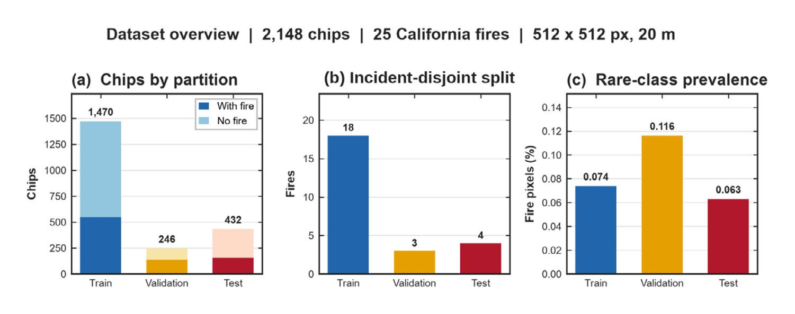
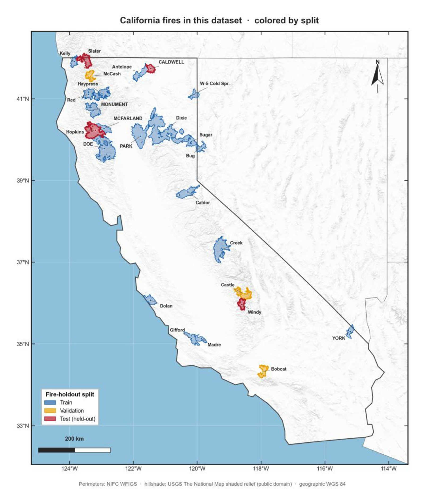
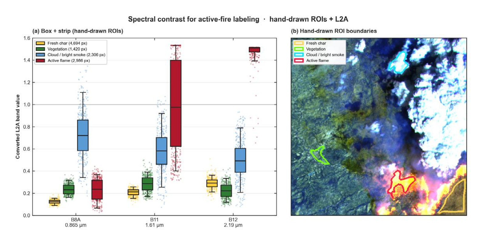
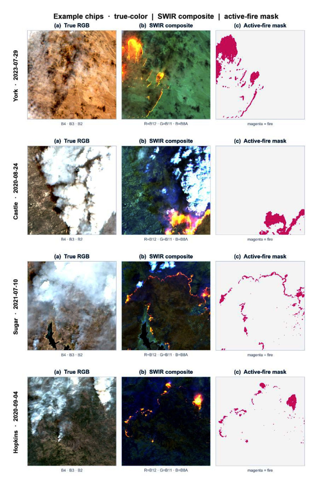
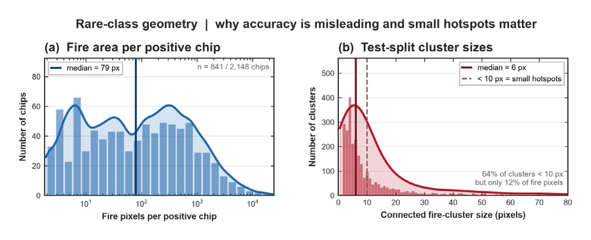
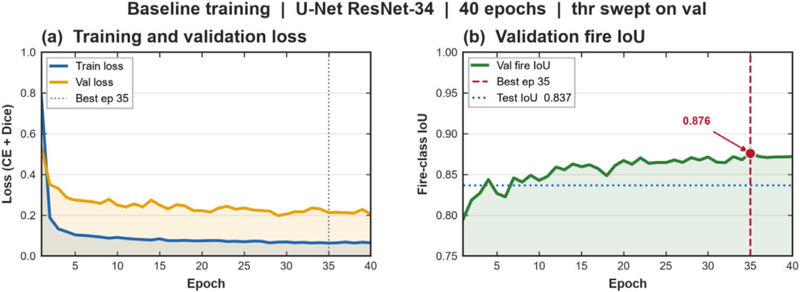
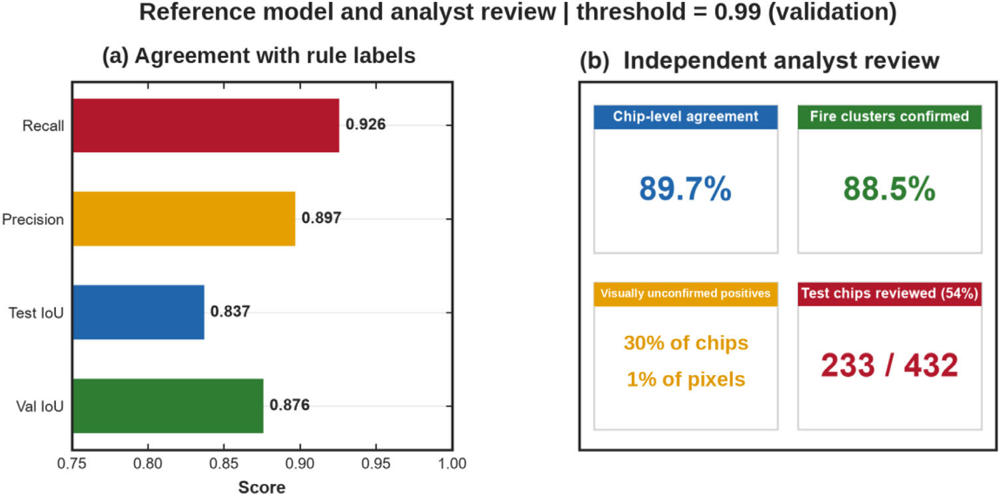
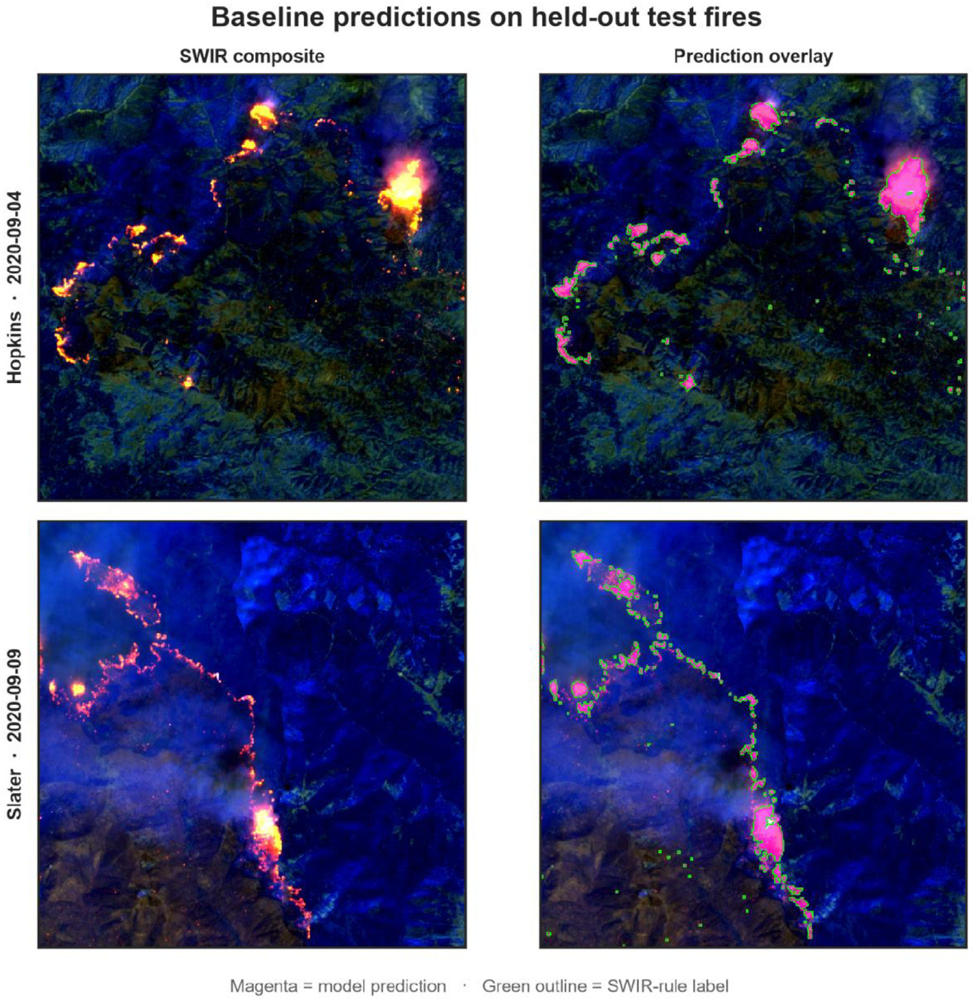
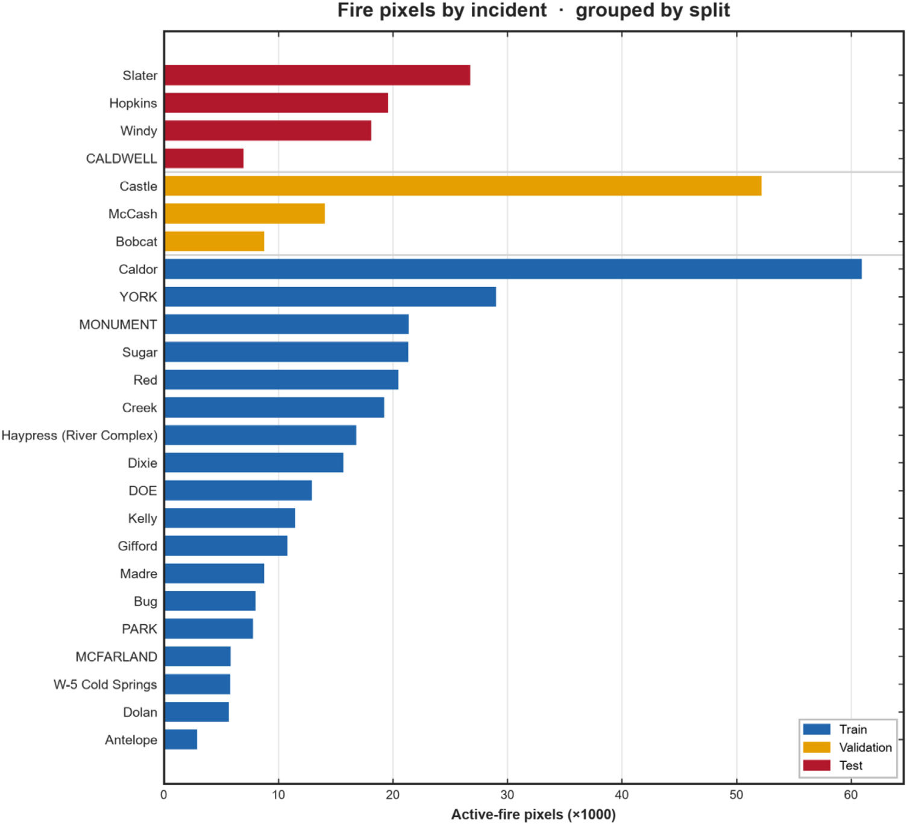

🔥 A Sentinel-2 Benchmark for Deep-Learning Active-Fire Segmentation
Shreyan Mitra, Mohammadreza Narimani* (corresponding author), and Parastoo Farajpoor
Data in Brief · Volume 69 · Article 113357 · 2026 · Open access CC BY 4.0
Department of Biological and Agricultural Engineering · University of California, Davis
Sentinel-2 Active-Fire Segmentation Benchmark for Deep Learning
An active-fire mask locates ongoing combustion in a satellite scene. It is not a burn-scar map and it is not a smoke product. Sentinel-2 shortwave infrared at 20 m can reveal flaming cores, but fair comparison of deep-learning segmentation models requires a shared rendering, a documented label rule, and a split that does not leak the same wildfire into both training and test.
For researchers searching Sentinel-2 active fire dataset, California wildfire segmentation, SWIR deep learning fire detection, or incident-disjoint wildfire benchmark, this open Data in Brief article by corresponding author Mohammadreza Narimani (University of California, Davis), Shreyan Mitra, and Parastoo Farajpoor releases a fixed archive of 2,148 image–mask pairs from 25 California wildfires (23 July 2020–21 August 2026).
Images are 512 × 512 three-channel composites of Sentinel-2 Level-2A bands B12, B11, and B8A with one linear rendering applied throughout. Masks code background (0), SWIR-rule active fire (1), and invalid observations (255). Fire labels occupy only 0.0766% of all grid cells—so overall accuracy is a misleading headline metric compared with precision, recall, and IoU on rare positives.
Incident-Disjoint Train, Validation, and Test Splits
Random chip splits can put pieces of the same wildfire into training and test, inflating scores through spatial leakage. This benchmark assigns partitions by wildfire name: 18 / 3 / 4 fires for train / validation / test (1,470 / 246 / 432 chips). Castle, McCash, and Bobcat are reserved for validation; Slater, Hopkins, CALDWELL, and Windy are reserved for testing. Every chip from a fire stays in one set, enabling grouped evaluation on events the model has never seen—the standard practitioners need for operational transfer.


SWIR Hotspot Labeling for Active Flame (Not Burn Scar)
Labels come from shortwave-infrared brightness and near-infrared contrast, then two steps of neighborhood growth—adapted from hotspot logic that exploits B12 emission near flaming combustion while B8A stays comparatively dark. Hand-drawn regions of interest illustrate why B11/B12 separate active flame from vegetation, char, and bright smoke. True-color RGB often hides the same cores under smoke plumes.
Fire labels occupy only 431,427 grid cells across the archive. Median fire area on a positive chip is 79 pixels; most connected clusters are small hotspots rather than broad fronts. That rare-class geometry is why the paper and companion code emphasize fire-class IoU, precision, and recall—not overall pixel accuracy.



Analyst Review, ResNet-34 U-Net Baseline, and How to Cite
An analyst reviewed 233 of 432 test chips without seeing the rule masks. Chip-level agreement was 89.7% and rule-component confirmation was 88.5%. Those annotations remain separate from training labels so users can quantify weak-label agreement independently—an important honesty check for algorithmic SWIR labels.
The companion GitHub repository provides dataset construction code and a ResNet-34 U-Net reference implementation with validation-based checkpoint and probability-threshold selection. Dataset version 1.0.0 is pinned on Zenodo (DOI 10.5281/zenodo.22713948); software is MIT-licensed. Use those pinned versions when you publish comparisons tied to this Data in Brief article by Mohammadreza Narimani and coauthors.




Fixed inputs
PNG images and integer masks with chip metadata, so methods can share the same files without reprocessing Sentinel-2 scenes.
Grouped evaluation
Wildfire-level partitions prevent the same incident from appearing in both training and test.
Rare-class design
Documented imbalance, invalid-pixel coding, and analyst review for honest segmentation metrics.
Paper and Citation
Mitra, S., Narimani, M., & Farajpoor, P. (2026). A Sentinel-2 benchmark dataset for deep-learning active-fire segmentation across 25 California wildfires, July 2020–August 2026. Data in Brief, 69, 113357.
DOI: 10.1016/j.dib.2026.113357 · Data: 10.5281/zenodo.22713948 · Open access under CC BY 4.0
Please cite the publisher version when you use this work. The summary on this page is a research card, not a substitute for the article.
Contact
Mohammadreza Narimani
PhD Candidate, University of California, Davis